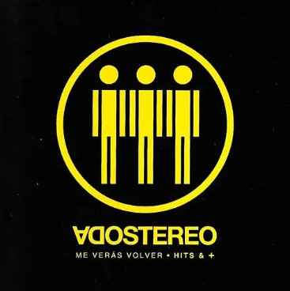
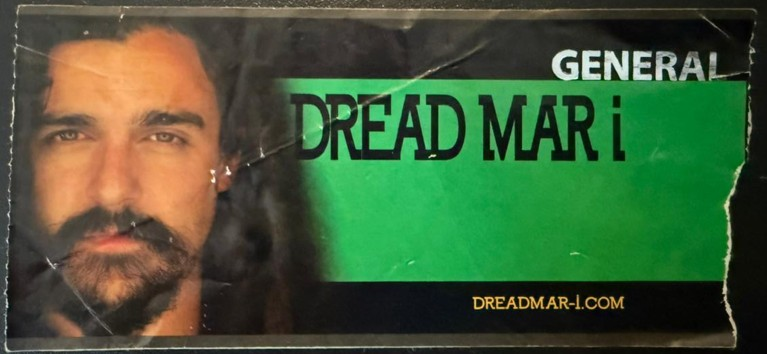

El origen: "Me verás volver"
Haciendo historia, recuerdo el primer CD que me compré: el recopilatorio de la gira “Me verás volver” de Soda Stereo, en 2007. Desde ese momento empecé a coleccionar CDs y a educar mi gusto musical.

Esta tendencia a coleccionar música en formato físico sigue hasta el día de hoy, pero con el tiempo migré del CD al Vinilo.
[ Gráfico VS - RAW: Colección por Formato y Género ]
El evento canónico
Hasta febrero de 2011 no sabía lo que era ir a ver música en vivo, pero ese año fui a mi primer recital: Dread Mar I. Ese show marcó mi adolescencia y entendí que la música está pensada para ser vivida en directo.

Como vivía en Paraná, Entre Ríos, era difícil que las bandas llegaran, pero un año después fui al Cosquín Rock y ahí todo se descontroló. Fue un camino de no retorno: si podía ir, iba. Si tenía que viajar, viajaba.
[ Mapa Recitales 2011-2026 - Tableau ]
Del estante a la nube
En 2016 me suscribí a Spotify. Han pasado 10 años de datos acumulados. La facilidad de acceso me permitió descubrir miles de artistas sin importar país o género.
Curiosamente, al analizar los datos, el mapa de mi escucha se volvió global, pero mi corazón (y mis minutos) tienen una lógica propia.
[ Gráfico Top 50 Artistas - Flourish ]
La respuesta en los datos
Al ver las listas, noté algo extraño: bandas que nunca hubiese puesto en mi Top 10, como Bándalos Chinos o El Kuelgue, lideraban las estadísticas.
¿Por qué estaban tan arriba? La respuesta fue sencilla y los datos la confirmaron: son las bandas que más veces vi en vivo.
[ Scatter Plot: Veces Visto vs. Minutos Escuchados - Tableau ]